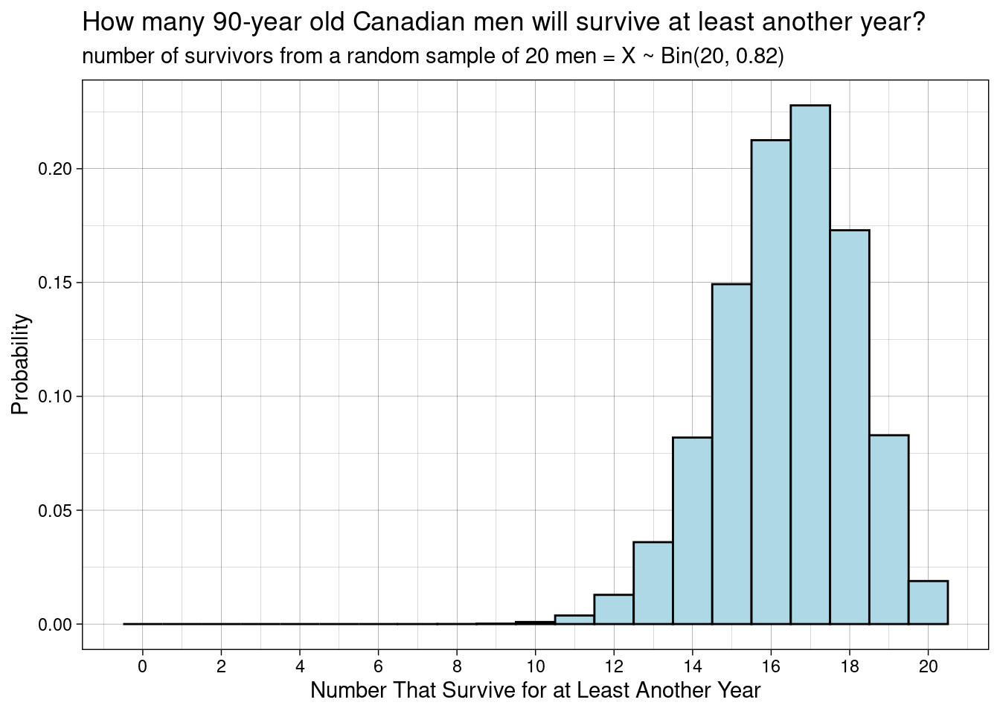
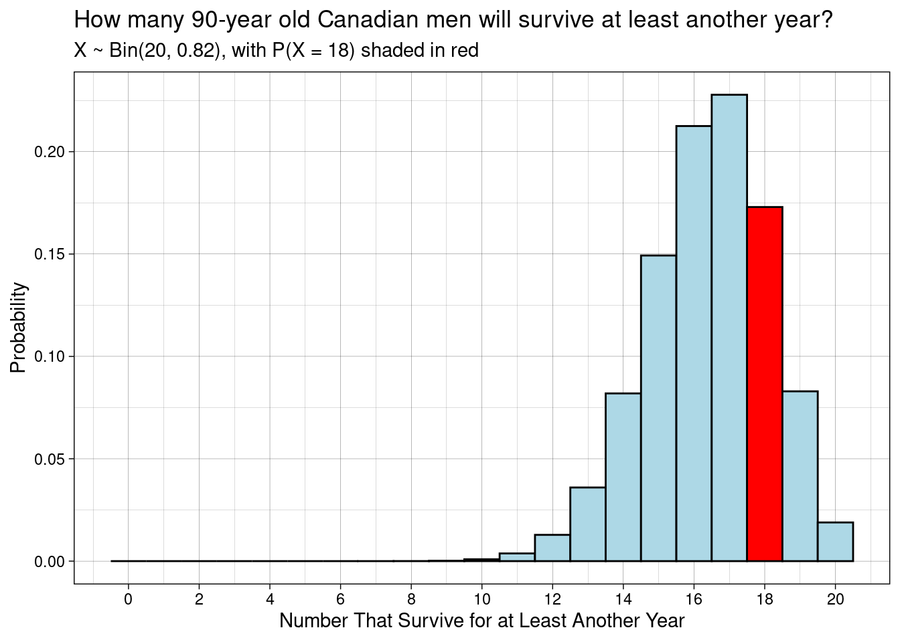
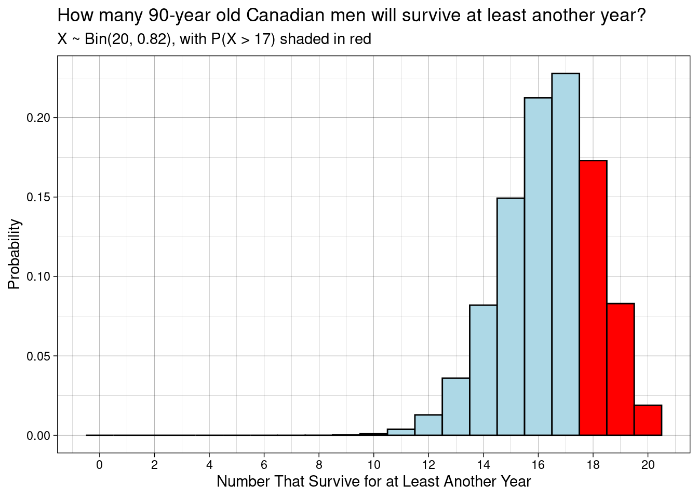
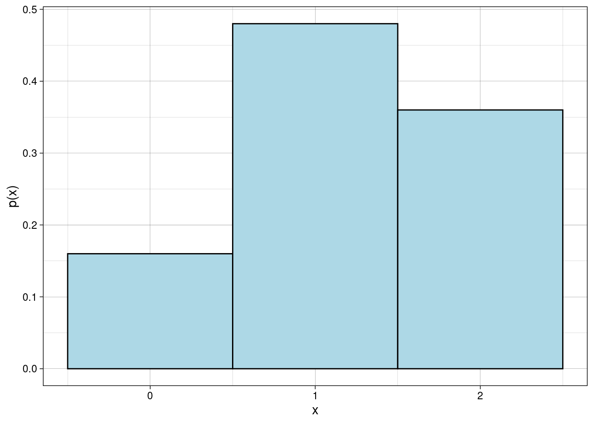

R Code for JB Statistics Video Lessonlibrary(tidyverse)
library(data.tree)
library(knitr)
library(kableExtra)The binomial distribution is a discrete probability distribution. It mathematically models the number of successes in a sequence of independent Bernoulli trials. The probability for a given number of successes \(x\) is found using the probability mass function (pmf).
\[X \sim Bin(n,p)\]
x = number of successes = {0, 1, 2, ..., n}
n = number of trials
p = probability of success on a single trial
1 - p = probability of failure on a single trial\[f(x) = P(X = x) = {n \choose x}p^x(1-p)^{n-x}\]
\[F(x)=P(X \leq x) = \sum\limits_{i=0}^x f(x) = \sum\limits_{i=0}^x {n \choose i}p^i(1-p)^{n-i}\]
\[E[X] = np \text{ and } Var[X] = np(1-p)\]
The random variable \(X\) is the number of fives we get when we roll a fair die three times.
\[X \sim Bin(3,\frac{1}{6})\]
What is the probability that a five comes up exactly 2 times in 3 rolls? Solve for \(x = 2\).
\[f(2) = P(X = 2) = {3 \choose 2}\left(\frac{1}{6}\right)^2\left(1-\frac{1}{6}\right)^{3-2}\]
dbinom(2, 3, 1/6) # dbinom(x, n, p)[1] 0.06944444We can visualize the various combinations of flips leading to two successes with a tree diagram.
rolltree <- Node$new("Sequence of 3 Trials")
FA <- rolltree$AddChild("Success")
FC <- FA$AddChild("Success")
FG <- FC$AddChild("Success")
SSS <- FG$AddChild("S S S")
FH <- FC$AddChild("Failure")
SSF <- FH$AddChild("S S F")
SSF2 <- SSF$AddChild("2 Successes")
FD <- FA$AddChild("Failure")
FI <- FD$AddChild("Success")
SFS <- FI$AddChild("S F S")
SFS2 <- SFS$AddChild("2 Successes")
FJ <- FD$AddChild("Failure")
SFF <- FJ$AddChild("S F F")
FB <- rolltree$AddChild("Failure")
FE <- FB$AddChild("Success")
FG <- FE$AddChild("Success")
FSS <- FG$AddChild("F S S")
FSS2 <- FSS$AddChild("2 Successes")
FH <- FE$AddChild("Failure")
FSF <- FH$AddChild("F S F")
FF <- FB$AddChild("Failure")
FG <- FF$AddChild("Success")
FFS <- FG$AddChild("F F S")
FH <- FF$AddChild("Failure")
FFF <- FH$AddChild("F F F")
SetGraphStyle(rolltree, rankdir = "TB")
SetNodeStyle(rolltree,
style = "filled, rounded",
shape = "box",
fillcolor = "lightblue",
fontcolor = "black")plot(rolltree)The random variable \(X\) is the number of 90-year-old Canadian males out of a sample of 20 that live at least another year.
\[X \sim Bin(20, 0.82)\]
What is the probability that exactly 18 out of 20 survive? Solve for \(x = 18\).
\[f(18) = P(X = 18) = {20 \choose 18}(0.82)^18(1-0.82)^{20-18}\]
dbinom(18, 20, 0.82) # dbinom(x, n, p)[1] 0.1729609We can calculate and plot the probabilities for all possible values of X. The code below can be used for any binomial distribution; simply input the correct n and p.
n <- 20
p <- 0.82
pmf <- tibble(x = 0:n, probability = dbinom(0:n, n, p))# probabilities for large digits are shown in scientific notation
probdigits <- 20 # specify display digits for the probabilities
pmf %>%
kable(digits = probdigits) %>%
kable_styling(full_width = FALSE,
position = "left",
font_size = 14,
bootstrap_options = c("striped"))| x | probability |
|---|---|
| 0 | 1.274820e-15 |
| 1 | 1.161506e-13 |
| 2 | 5.026740e-12 |
| 3 | 1.373976e-10 |
| 4 | 2.660169e-09 |
| 5 | 3.877936e-08 |
| 6 | 4.416538e-07 |
| 7 | 4.023957e-06 |
| 8 | 2.978846e-05 |
| 9 | 1.809373e-04 |
| 10 | 9.066969e-04 |
| 11 | 3.755007e-03 |
| 12 | 1.282961e-02 |
| 13 | 3.596677e-02 |
| 14 | 8.192430e-02 |
| 15 | 1.492843e-01 |
| 16 | 2.125228e-01 |
| 17 | 2.278022e-01 |
| 18 | 1.729609e-01 |
| 19 | 8.294032e-02 |
| 20 | 1.889196e-02 |
breakby <- 2 # choose spacing for the x-axis tick marks
pmfplot <- ggplot(pmf, aes(x = x, y = probability)) +
geom_col(width = 1, color = "black", fill = "lightblue") +
scale_x_continuous(breaks = seq(from = 0, to = n, by = breakby)) +
labs(title = "How many 90-year old Canadian men will survive at least another year?",
subtitle = "number of survivors from a random sample of 20 men = X ~ Bin(20, 0.82)",
x = "Number That Survive for at Least Another Year",
y = "Probability") +
theme_linedraw()pmfplot
breakby <- 2 # choose spacing of x-axis tick marks
pmfplot <- ggplot(pmf, aes(x = x, y = probability)) +
geom_col(width = 1, color = "black",
fill = c(rep("lightblue", 18), "red", rep("lightblue", 2))) + # bar shading
scale_x_continuous(breaks = seq(from = 0, to = n, by = breakby)) +
labs(title = "How many 90-year old Canadian men will survive at least another year?",
subtitle = "X ~ Bin(20, 0.82), with P(X = 18) shaded in red",
x = "Number That Survive for at Least Another Year",
y = "Probability") +
theme_linedraw()pmfplot
# probabilities for large digits are shown in scientific notation
probdigits <- 20 # specify display digits for the probabilities
pmf %>%
kable(digits = probdigits) %>%
row_spec(row = 19, color = "white", background = "red", bold = TRUE) %>%
kable_styling(full_width = FALSE,
position = "left",
font_size = 14,
bootstrap_options = c("striped"))| x | probability |
|---|---|
| 0 | 1.274820e-15 |
| 1 | 1.161506e-13 |
| 2 | 5.026740e-12 |
| 3 | 1.373976e-10 |
| 4 | 2.660169e-09 |
| 5 | 3.877936e-08 |
| 6 | 4.416538e-07 |
| 7 | 4.023957e-06 |
| 8 | 2.978846e-05 |
| 9 | 1.809373e-04 |
| 10 | 9.066969e-04 |
| 11 | 3.755007e-03 |
| 12 | 1.282961e-02 |
| 13 | 3.596677e-02 |
| 14 | 8.192430e-02 |
| 15 | 1.492843e-01 |
| 16 | 2.125228e-01 |
| 17 | 2.278022e-01 |
| 18 | 1.729609e-01 |
| 19 | 8.294032e-02 |
| 20 | 1.889196e-02 |
Here we use the values for \(n\) and \(p\) that we input above for the pmf.
Expected Value
(mu <- n * p)[1] 16.4Variance
(sigma2 <- n * p * (1 - p))[1] 2.952Standard Deviation
(sigma <- sqrt(sigma2))[1] 1.718139What is the probability that at least 18 out of 20 survive? Solve for \(x \geq 18\).
\[P(X \geq 18) = P(X = 18) + P(x = 19) + P(X = 20)\]
Algorithmically, we can do…
dbinom(18, 20, 0.82) + dbinom(18, 19, 0.82) + dbinom(20, 20, 0.82)[1] 0.2879423This could be condensed by…
sum(dbinom(18:20, 20, 0.82))[1] 0.2747932However, for the binomial it is also true that…
\[P(X \geq 18) = P(X > 17) = 1 - P(X \leq 17)\]
Thus we can use the cumulative distribution function…
pbinom(17, 20, 0.82, lower.tail = FALSE) # pbinom(x, n, p, lower.tail = FALSE)[1] 0.2747932Here we use the same pmf we calculated and stored above.
pmfplot <- ggplot(pmf, aes(x = x, y = probability)) +
geom_col(width = 1, color = "black",
fill = c(rep("lightblue", 18), rep("red", 3))) +
scale_x_continuous(breaks = seq(from = 0, to = n, by = 2)) +
labs(title = "How many 90-year old Canadian men will survive at least another year?",
subtitle = "X ~ Bin(20, 0.82), with P(X > 17) shaded in red",
x = "Number That Survive for at Least Another Year",
y = "Probability") +
theme_linedraw()pmfplot
# the probabilities are in scientific notation
pmf %>%
kable(digits = 20) %>%
row_spec(row = 19:21, color = "white", background = "red", bold = TRUE) %>%
kable_styling(full_width = FALSE,
position = "left",
font_size = 14,
bootstrap_options = c("striped"))| x | probability |
|---|---|
| 0 | 1.274820e-15 |
| 1 | 1.161506e-13 |
| 2 | 5.026740e-12 |
| 3 | 1.373976e-10 |
| 4 | 2.660169e-09 |
| 5 | 3.877936e-08 |
| 6 | 4.416538e-07 |
| 7 | 4.023957e-06 |
| 8 | 2.978846e-05 |
| 9 | 1.809373e-04 |
| 10 | 9.066969e-04 |
| 11 | 3.755007e-03 |
| 12 | 1.282961e-02 |
| 13 | 3.596677e-02 |
| 14 | 8.192430e-02 |
| 15 | 1.492843e-01 |
| 16 | 2.125228e-01 |
| 17 | 2.278022e-01 |
| 18 | 1.729609e-01 |
| 19 | 8.294032e-02 |
| 20 | 1.889196e-02 |
pmf %>%
filter(x >=18) %>%
summarize(prob_greq18 = sum(probability))# A tibble: 1 × 1
prob_greq18
<dbl>
1 0.275The babies with jaundice example from An Introduction to Discrete Random Variables and Discrete Probability Distributions can be modeled with the binomial distribution, because it is a series of independent Bernoulli trials with a constant probability.
n <- 2
p <- 0.6
pmf <- tibble(x = 0:n, probability = dbinom(0:n, n, p))probdigits <- 2 # specify display digits for the probabilities
pmf %>%
kable(digits = probdigits) %>%
kable_styling(full_width = FALSE,
position = "left",
font_size = 14,
bootstrap_options = c("striped"))| x | probability |
|---|---|
| 0 | 0.16 |
| 1 | 0.48 |
| 2 | 0.36 |
breakby <- 1 # choose spacing of x-axis tick marks
pmfplot <- ggplot(pmf, aes(x = x, y = probability)) +
geom_col(width = 1, color = "black", fill = "lightblue") +
scale_x_continuous(breaks = 0:2) +
labs(x = "x",
y = "p(x)") +
theme_linedraw()pmfplot
Previously you saw that you can simulate Bernoulli trials using the function rbernoulli(n, p) (purrr package). The parameter n in this case is the number of times you want to repeat the Bernoulli process. In other words, it is the number of flips. For example, if we want fifty flips of a fair coin, we could use the following code. The output is a logical vector with TRUE for a success.
rbernoulli(50, 0.5) [1] FALSE TRUE FALSE FALSE FALSE TRUE TRUE TRUE FALSE FALSE TRUE FALSE
[13] TRUE TRUE TRUE TRUE FALSE FALSE TRUE FALSE FALSE TRUE FALSE TRUE
[25] TRUE TRUE FALSE FALSE TRUE TRUE TRUE TRUE FALSE TRUE FALSE FALSE
[37] TRUE TRUE FALSE FALSE TRUE FALSE TRUE TRUE TRUE FALSE TRUE TRUE
[49] FALSE TRUEWe can also perform this simulation with the rbinom(n, size, prob) function. In this case, the size parameter is set to 1, for one trial. In this sense, the Bernoulli is a special case of Binomial with n = 1. The output is an integer vector with 1 for a success.
rbinom(50, 1, 0.5) [1] 1 0 1 1 0 0 0 0 1 1 0 0 1 0 1 0 0 1 1 1 1 1 1 1 1 0 1 0 1 0 0 0 0 0 0 0 1 1
[39] 0 0 0 1 0 0 1 0 1 0 1 0sessionInfo()R version 3.6.0 (2019-04-26)
Platform: x86_64-redhat-linux-gnu (64-bit)
Running under: Red Hat Enterprise Linux
Matrix products: default
BLAS/LAPACK: /usr/lib64/R/lib/libRblas.so
locale:
[1] LC_CTYPE=en_US.UTF-8 LC_NUMERIC=C
[3] LC_TIME=en_US.UTF-8 LC_COLLATE=en_US.UTF-8
[5] LC_MONETARY=en_US.UTF-8 LC_MESSAGES=en_US.UTF-8
[7] LC_PAPER=en_US.UTF-8 LC_NAME=C
[9] LC_ADDRESS=C LC_TELEPHONE=C
[11] LC_MEASUREMENT=en_US.UTF-8 LC_IDENTIFICATION=C
attached base packages:
[1] stats graphics grDevices utils datasets methods base
other attached packages:
[1] kableExtra_1.3.4 knitr_1.33 data.tree_1.0.0 forcats_0.5.1
[5] stringr_1.4.0 dplyr_1.0.7 purrr_0.3.4 readr_2.0.0
[9] tidyr_1.1.3 tibble_3.1.3 ggplot2_3.3.5 tidyverse_1.3.1
loaded via a namespace (and not attached):
[1] Rcpp_1.0.7 svglite_2.0.0 lubridate_1.7.10 visNetwork_2.0.9
[5] assertthat_0.2.1 digest_0.6.27 utf8_1.2.2 R6_2.5.0
[9] cellranger_1.1.0 backports_1.2.1 reprex_2.0.0 evaluate_0.14
[13] highr_0.9 httr_1.4.2 pillar_1.6.1 rlang_0.4.11
[17] readxl_1.3.1 rstudioapi_0.13 jquerylib_0.1.4 DiagrammeR_1.0.6.1
[21] rmarkdown_2.9 labeling_0.4.2 webshot_0.5.2 htmlwidgets_1.5.3
[25] munsell_0.5.0 broom_0.7.8 compiler_3.6.0 modelr_0.1.8
[29] xfun_0.24 pkgconfig_2.0.3 systemfonts_1.0.2 vembedr_0.1.4
[33] htmltools_0.5.1.1 tidyselect_1.1.1 fansi_0.5.0 viridisLite_0.4.0
[37] crayon_1.4.1 tzdb_0.1.2 dbplyr_2.1.1 withr_2.4.2
[41] grid_3.6.0 jsonlite_1.7.2 gtable_0.3.0 lifecycle_1.0.0
[45] DBI_1.1.1 magrittr_2.0.1 scales_1.1.1 cli_3.0.1
[49] stringi_1.7.3 farver_2.1.0 fs_1.5.0 xml2_1.3.2
[53] bslib_0.2.5.1 ellipsis_0.3.2 generics_0.1.0 vctrs_0.3.8
[57] RColorBrewer_1.1-2 tools_3.6.0 glue_1.4.2 hms_1.1.0
[61] yaml_2.2.1 colorspace_2.0-2 rvest_1.0.0 haven_2.4.1
[65] sass_0.4.0